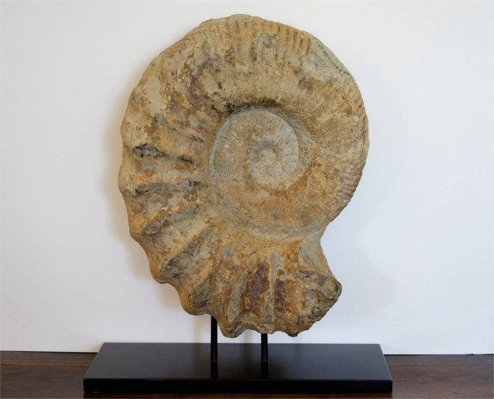

representacion de un parapuzosia
El parapuzosia fue un genero extinto de amonitas capaces de llegar a medir 60 centimetros de diámetros como la especie ma grande con 2.5 meros. Vivieron en aguas donde ahora se encuentra Africa,Europa y Norteamérica en la edad Cenomaniense hasta la edad Campaniano en Cretácico tardío Superior. El nombre del parapuzosia vine del sebio que signifca en puzo (caracol) y osia (Axis).
fossil del caparazon del parapuzosia